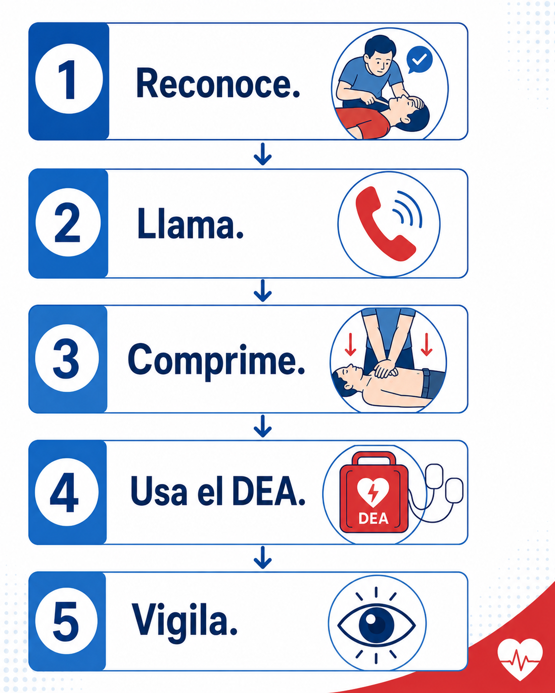

23 · Cierre
Cierre
Has finalizado el recorrido por los principios básicos de RCP, uso del DEA y actuación del primer respondiente.
Recuerda que ante una posible parada cardíaca debes actuar con seguridad, rapidez y orden.

Material de consulta
Llevate el manual del curso
PDF descargable para consultar cuando lo necesites.
Una producción de Waygroup · SST en la era digital. Gracias por completar este curso.